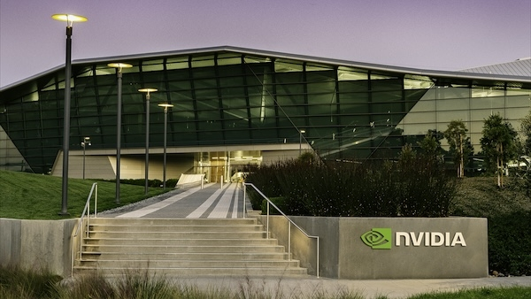

NVIDIA x Nebius: un signal fort pour l'IA souveraine à l'échelle gigawatt
Le communiqué officiel NVIDIA du 11 mars 2026 annonce un partenariat stratégique avec Nebius pour accélérer le déploiement d'infrastructures IA à l'échelle multi-gigawatts. Pour les organisations européennes, c'est un signal de plus: la souveraineté IA se joue désormais sur la capacité industrielle réelle, pas seulement sur la politique de conformité.

1. Ce qui est annoncé officiellement
NVIDIA et Nebius annoncent une collaboration approfondie sur toute la stack AI factory (design, infrastructure, inférence, software), avec un objectif explicite: permettre à Nebius de déployer plus de 5 gigawatts de systèmes NVIDIA d'ici fin 2030. NVIDIA annonce aussi un investissement de 2 milliards de dollars dans Nebius.
2. Pourquoi c'est structurant pour l'IA souveraine
Ce communiqué illustre un basculement du marché: les acteurs qui maîtrisent la combinaison capacité énergétique + architecture GPU + opérations cloud gagnent un avantage décisif. Dans une logique souveraine, l'enjeu n'est plus uniquement où résident les données, mais qui contrôle la continuité opérationnelle des charges IA critiques.
3. Lecture opérationnelle pour les entreprises
Les directions IT, data et sécurité doivent qualifier les workloads dépendants de capacités GPU massives et définir des scénarios de continuité. Cela implique de segmenter les usages selon leur criticité, contractualiser des options de capacité, et intégrer des plans de réversibilité entre environnements cloud et souverains.
Lancer un audit de dépendance GPU et définir un plan de continuité "performance + souveraineté" pour les cas d'usage IA critiques des 12 prochains mois.
Démarrer le cadrage